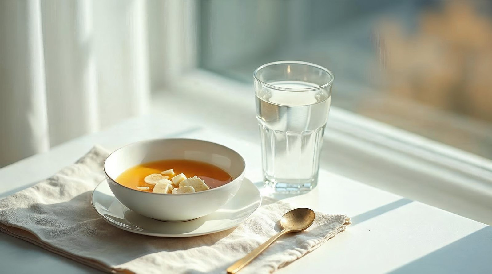
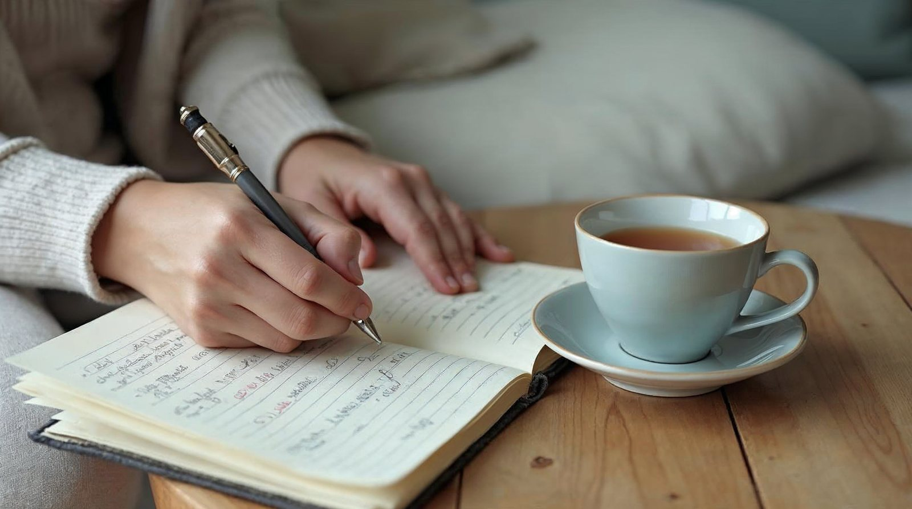
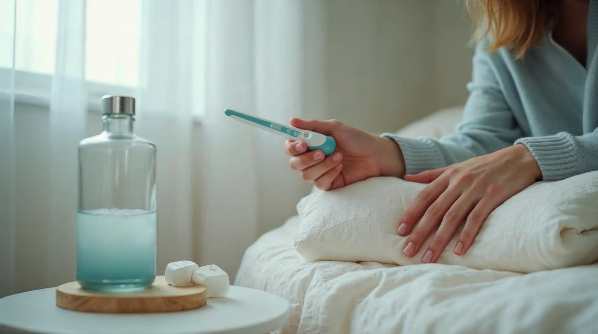
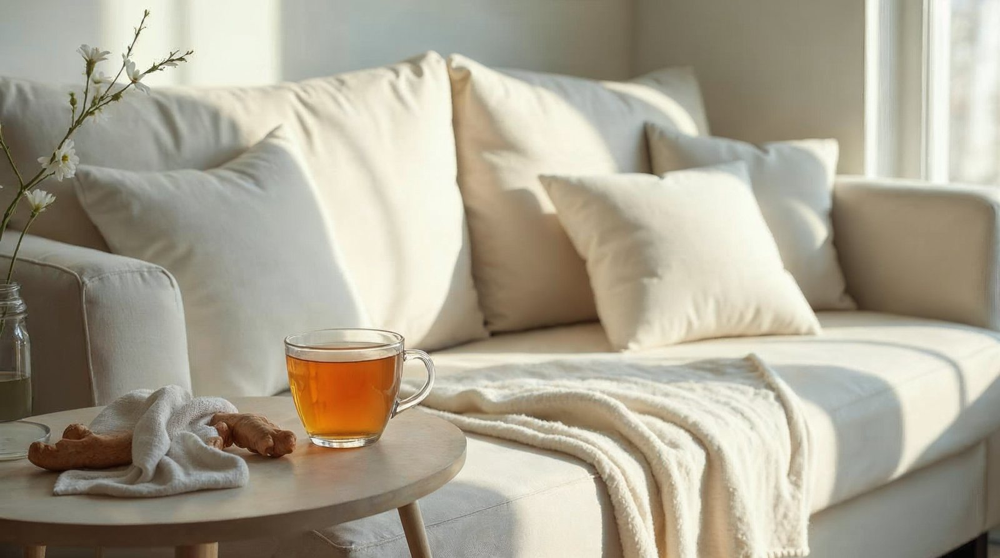
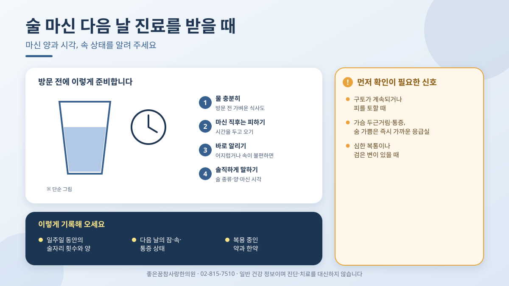

이종호 한의사 감수좋은꿈참사랑한의원 대표원장 (한의사 면허번호 19769)발행 2026-11-23 · 수정 2026-11-26
이 글의 차례
- 왜 음주 사실을 알려야 할까요
- 자주 하는 오해
- 예를 들면 이런 경우입니다
- 먼저 이렇게 여쭙니다
- 일상에서 먼저 해 볼 수 있는 것
- 한의원에서 함께 살필 수 있는 경우
- 스스로 점검해 보세요
- 얼마나 지켜보고, 언제 상담하면 좋을까요
- 이렇게 기록해 오시면 상담이 쉬워집니다
- 왜 술 마신 다음 날 목과 허리가 더 뻐근할까요?
- 몇 잔까지 마시면 진료를 받아도 되나요?
- 진료 전에 이 순서로 몸을 살펴보세요
- 한약을 드시는 동안 술자리가 잡혔다면
- 술자리가 잦은 분과는 이런 이야기를 나눕니다
- 기록은 이렇게 적어 보세요
- 전날 술자리는 이렇게 알려 주세요
- 술과 잠은 어떤 관계가 있을까요?
- 왜 술 마신 다음 날에는 치료 범위를 조절할까요?
- 해장 음식은 어떻게 고르면 좋을까요?
- 술을 줄이고 싶다면 이렇게 시작해 보세요
- 술 이야기를 꺼내기 민망하다면
- 다음 날 진료가 잡혀 있는데 술자리가 생겼다면
- 왜 술자리 기록이 생활 이야기의 출발점이 될까요?
- 술자리 다음 날 아침에 해 볼 수 있는 가벼운 움직임
- 술 마신 다음 날에도 이어 가면 좋은 것
- 이런 증상은 먼저 확인이 필요합니다
- 함께 읽으면 좋은 글
술을 마신 다음 날에도 진료를 받을 수 있지만, 전날 마신 양과 시각, 지금 속 상태를 솔직하게 알려 주셔야 합니다. 숙취로 속이 메스껍거나 어지러운 날에는 치료 방법을 조절하거나 휴식을 먼저 권할 수 있기 때문입니다. 노량진·상도동 직장인들이 회식 다음 날 목과 허리가 더 뻐근해 찾아오는 경우가 많아 자주 받는 질문입니다.
왜 음주 사실을 알려야 할까요
- 술을 마신 다음 날에는 몸에 수분이 부족하고 어지럼이 생기기 쉽습니다.
- 숙취로 속이 불편하면 엎드린 자세의 치료가 힘들 수 있습니다.
- 술자리 뒤 잠이 얕아지면 통증과 피로를 더 예민하게 느낄 수 있습니다.
- 복용 중인 약이나 한약에 따라 음주에 대한 안내가 달라질 수 있습니다.
자주 하는 오해
- 하룻밤 자고 나면 술기운이 다 빠진다고 여기기 쉽지만, 늦게까지 많이 마셨다면 다음 날 오전까지 술기운과 어지럼, 탈수가 남아 있을 수 있습니다. 이런 날은 직접 운전해 오시기보다 대중교통을 이용하시는 편이 안전합니다.
- 숙취는 진료와 상관없다고 생각해 말하지 않는 분이 있지만, 치료 자세와 강도를 정하는 데 필요한 정보입니다.
- 술 마신 다음 날 몸이 뻐근한 것은 술 때문만이라고 여기기 쉽지만, 오래 앉아 있던 자세나 얕은 잠이 함께 영향을 줄 수 있습니다.
- 해장으로 진한 커피나 에너지음료를 마시면 괜찮아진다고 생각하기 쉽지만, 수분이 더 부족해지거나 가슴이 두근거릴 수 있습니다.

예를 들면 이런 경우입니다
- 예를 들어 회식 다음 날 점심시간에 목과 어깨가 굳어 들른 직장인이라면, 전날 마신 양과 아침 식사 여부를 먼저 확인하고 어지럽지 않은 자세로 진료합니다.
- 예를 들어 주말 모임 뒤 일요일 오전에 허리가 뻐근한 분이라면, 물과 가벼운 식사를 하고 오후에 오시는 편이 편할 수 있습니다. 토·일·공휴일 진료는 09:30~15:00입니다.
- 예를 들어 연말처럼 술자리가 몰리는 시기에 한약을 드시는 분이라면, 술자리 날짜를 미리 알려 주시면 복용 일정을 함께 정합니다.
먼저 이렇게 여쭙니다
- 전날 마신 술의 종류와 양, 마신 시각은 어떤가요?
- 지금 메스꺼움, 두통, 어지럼이 있나요?
- 물과 식사는 충분히 하셨나요?
- 어젯밤 잠은 몇 시간쯤, 몇 번 깨며 주무셨나요?
- 먹고 있는 약이나 한약이 있나요?

일상에서 먼저 해 볼 수 있는 것
- 방문 전 물을 충분히 마시고 가벼운 식사하기
- 술을 마신 직후에는 치료를 피하고, 침을 맞은 날에도 과음은 하지 않기
- 진료 중 어지럽거나 속이 불편하면 바로 알리기
- 술자리 다음 날 몸 상태를 기록해 두기
- 술자리 중간중간 물을 함께 마시고, 귀가 뒤에도 물 한두 잔 마시고 자기
- 다음 날 진료가 있다면 전날 자정 전에는 자리를 마무리하고 해장 음식은 맵고 짠 것보다 따뜻하고 순한 것으로 고르기
- 술 마신 다음 날에는 무거운 운동이나 사우나를 피하고, 목과 허리는 가볍게 풀어 주는 정도로 두기
한의원에서 함께 살필 수 있는 경우
- 술자리가 잦아 잠이 얕고 속이 불편한 날이 이어질 때 생활 리듬을 함께 여쭙니다.
- 술을 마신 뒤 목과 허리가 더 뻐근해질 때 자세와 수면을 함께 살핍니다.
- 술을 줄이기 어렵다고 느껴질 때 그 어려움도 함께 이야기합니다.
좋은꿈참사랑한의원에서는 이런 날에도 맥부터 짚고, 맥을 짚으면서 전날 마신 양과 시각, 지금 메스꺼움이나 어지럼이 있는지 여쭙습니다. 필요하다고 판단될 때 설진을 더해 살핀 뒤, 무리가 없는 범위에서 침이나 추나 등 방법과 자세를 정합니다. 속이 많이 불편한 날은 진료를 미루고 쉬도록 권할 수 있습니다.
술자리가 잦은 분은 필요하다고 판단되면 원내 혈액 검사기나 인바디 770으로 몸 상태를 함께 확인할 수 있습니다. 적어 오신 술자리 기록과 잠, 속 상태를 같이 보고, 오늘 할 치료와 다음 술자리 전후에 조심할 점을 설명드립니다.
스스로 점검해 보세요
- 전날 밤 늦게까지 술을 마셨다
- 아침에 일어나 메스껍거나 머리가 무겁다
- 물이나 식사를 거의 하지 못했다
- 일어설 때 어지럽거나 손이 떨린다
- 술자리 다음 날 목과 허리가 유난히 뻐근해지는 일이 자주 있다
- 일주일에 술자리가 세 번 이상이다
- 복용 중인 약이나 한약이 있다
위의 앞쪽 네 가지 가운데 해당하는 것이 있다면 진료 시간을 늦추거나 하루 쉬고 오시는 편이 편할 수 있습니다. 해당하는 항목은 접수 때 말씀해 주세요.

얼마나 지켜보고, 언제 상담하면 좋을까요
- 가벼운 숙취는 물과 가벼운 식사, 휴식으로 대개 하루 안에 가라앉습니다.
- 술자리 다음 날마다 같은 곳이 뻐근한 일이 몇 주째 반복된다면 진료 때 생활 리듬과 함께 상담해 보세요.
- 술을 줄이고 싶은데 혼자서는 어렵다고 느껴진다면, 그 어려움도 편하게 이야기해 주세요. 필요하면 전문적인 지원 기관도 안내해 드립니다.

이렇게 기록해 오시면 상담이 쉬워집니다
- 일주일 동안의 술자리 횟수와 양
- 술자리 다음 날의 잠, 속, 통증 상태
- 복용 중인 약과 한약
- 술을 줄이려고 시도해 본 방법
왜 술 마신 다음 날 목과 허리가 더 뻐근할까요?
술자리는 생각보다 오래 앉아 있는 자리입니다. 좌식 식당의 낮은 상이나 등받이 없는 의자에서 몇 시간을 보내면 허리와 목이 한 자세로 굳기 쉽습니다.
여기에 몸의 수분이 부족해지고, 잠이 얕아지며, 집에 와서 소파에서 잠드는 일까지 겹치면 다음 날 아침 뻐근함이 더 크게 느껴질 수 있습니다. 그래서 술의 양과 함께 어떤 자리에서 얼마나 앉아 있었는지도 여쭙습니다.
몇 잔까지 마시면 진료를 받아도 되나요?
몇 잔이라고 정해 말씀드리기는 어렵습니다. 같은 양이라도 마신 시각, 잠을 잔 시간, 식사 여부, 평소 체질에 따라 다음 날 몸 상태가 크게 달라지기 때문입니다.
기준은 잔 수보다 지금 몸 상태입니다. 마신 시각에서 진료까지 시간이 짧을수록, 잠을 적게 잤을수록 조심하는 것이 좋습니다. 망설여지면 방문 전에 전화로 지금 상태를 말씀하시고 시간을 상의해 주세요.
진료 전에 이 순서로 몸을 살펴보세요
먼저 물을 한 컵 마시고, 속이 받아 준다면 죽이나 국처럼 가벼운 식사를 해 보세요. 그다음 일어서서 집 안을 몇 바퀴 걸으며 머리가 맑은지, 발걸음이 가벼운지 살펴봅니다.
소변 색이 평소보다 많이 진하다면 아직 수분이 부족하다는 신호일 수 있어 물을 조금 더 드시고 출발하는 것이 좋습니다. 이렇게 확인해 보고 컨디션이 돌아왔다고 느껴질 때 오시면 진료도 한결 편합니다.
한약을 드시는 동안 술자리가 잡혔다면
술자리 날짜가 정해지면 다음 진료 때 미리 알려 주세요. 그날과 다음 날 한약을 어떻게 드실지 처방에 맞춰 함께 정합니다.
술자리 때문에 거른 한약을 다음 날 한꺼번에 몰아서 드시는 것은 피해 주세요. 거른 날이 있었다면 날짜를 적어 두었다가 진료 때 말씀해 주시면 됩니다.
술자리가 잦은 분과는 이런 이야기를 나눕니다
일 때문에 술자리를 피하기 어려운 분이 많습니다. 그래서 술을 끊으라는 말보다 할 수 있는 것부터 함께 찾습니다. 술 한 잔에 물 한 잔 곁들이기, 기름진 안주 대신 국물이나 채소 고르기, 2차는 한 번 건너뛰기 같은 것들입니다.
다음 날 아침 식사를 거르지 않는 것도 중요합니다. 거창한 결심보다 이런 작은 습관 하나가 술자리 다음 날의 몸을 덜 힘들게 하는 데 도움이 될 수 있습니다.
기록은 이렇게 적어 보세요
"금요일 회식, 소주 한 병쯤, 새벽 1시 귀가, 소파에서 잠듦. 토요일 아침 목 뻐근함 6점, 속 더부룩함." 이 정도 한두 줄이면 충분합니다.
이렇게 몇 주를 모아 보면 어떤 술자리 다음 날 어디가 불편했는지 흐름이 보입니다. 기록은 나무라기 위한 것이 아니라 생활과 몸의 관계를 함께 살피기 위한 자료입니다.
전날 술자리는 이렇게 알려 주세요
술의 종류와 양을 병이나 잔으로, 마시기 시작한 시각과 끝난 시각, 몇 시에 잠들었는지를 알려 주세요. "맥주 세 잔, 저녁 7시부터 10시까지, 12시에 잠" 정도면 충분합니다.
정확한 양이 기억나지 않으면 "평소보다 많이", "평소만큼"처럼 말씀하셔도 괜찮습니다. 이 정보로 오늘 몸이 얼마나 지쳐 있을지 가늠하고 치료 범위를 정합니다.
술과 잠은 어떤 관계가 있을까요?
술을 마시면 잠이 빨리 드는 것처럼 느껴지지만, 새벽에 자주 깨거나 잠이 얕아지는 경우가 많습니다. 잠을 잔 시간은 길어도 몸이 충분히 쉬지 못한 채 아침을 맞게 됩니다.
이렇게 쉬지 못한 몸은 다음 날 통증과 피로를 더 예민하게 느낄 수 있습니다. 그래서 술의 양과 함께 몇 번 깼는지, 아침에 개운했는지도 여쭙습니다.
왜 술 마신 다음 날에는 치료 범위를 조절할까요?
몸이 지친 날에는 평소와 같은 자극도 부담이 될 수 있습니다. 엎드린 자세가 힘들 수 있어 옆으로 눕거나 앉은 자세를 고르기도 하고, 추나처럼 몸을 움직이는 치료는 그날 컨디션을 보고 범위를 정합니다.
그래서 치료가 평소보다 가볍게 느껴질 수 있습니다. 몸이 회복된 뒤 다시 평소 범위로 이어 가니 걱정하지 않으셔도 됩니다.
해장 음식은 어떻게 고르면 좋을까요?
맵고 짠 국물보다는 콩나물국, 북엇국, 맑은 죽처럼 따뜻하고 순한 음식이 속에 부담이 덜합니다. 기름진 음식은 속이 가라앉은 뒤로 미뤄 두세요.
물은 한꺼번에 많이 마시기보다 조금씩 자주 나눠 마시는 것이 편합니다. 진한 커피는 속이 편해지고 물을 충분히 마신 뒤에 드시는 것이 좋습니다.
술을 줄이고 싶다면 이렇게 시작해 보세요
일주일 중 술을 마시지 않는 날을 하루나 이틀 정해 달력에 표시해 보세요. 그 날의 잠과 다음 날 아침 몸 상태를 술 마신 날과 비교해 적어 보면 몸이 보내는 차이가 보입니다.
술자리에서 탄산수나 무알코올 음료를 중간중간 곁들이는 것도 방법입니다. 혼자 해 보기 어렵다면 진료 때 편하게 말씀해 주세요. 생활 리듬과 함께 이야기합니다.
술 이야기를 꺼내기 민망하다면
술을 마셨다는 말을 꺼내기 민망해하는 분이 많습니다. 하지만 진료실에서는 나무라려고 묻는 것이 아니라 오늘 어떤 방법이 몸에 맞을지 정하려고 여쭙습니다.
접수할 때 "어제 술을 좀 마셨어요" 한마디만 해 주셔도 됩니다. 그 말 덕분에 그날 몸에 맞는 치료를 고를 수 있습니다.
다음 날 진료가 잡혀 있는데 술자리가 생겼다면
진료 전날 갑자기 술자리가 생겼다면 무리하게 마시기보다 양을 조절하고 일찍 마무리해 보세요. 다음 날 아침 몸 상태를 확인한 뒤 진료 시간을 그대로 둘지 늦출지 정하시면 됩니다.
예약 시간을 바꾸고 싶다면 미리 전화로 알려 주세요. 컨디션이 돌아온 시간에 받는 진료가 몸에도 편합니다.
왜 술자리 기록이 생활 이야기의 출발점이 될까요?
술 이야기를 하다 보면 자연스럽게 잠드는 시각, 아침 식사, 주중 일과가 함께 드러납니다. 술자리가 잦은 주에는 운동을 거르고 야식이 늘어나는 식으로 생활 전체가 함께 흔들리는 경우가 많습니다.
그래서 술자리 기록은 술만 보는 것이 아니라 한 주의 생활 리듬을 함께 보는 창이 됩니다. 기록을 바탕으로 이번 주에 바꿔 볼 작은 습관 하나를 함께 정합니다.
술자리 다음 날 아침에 해 볼 수 있는 가벼운 움직임
일어나자마자 몸을 크게 움직이기보다 누운 채로 발목을 천천히 돌리고, 무릎을 가슴 쪽으로 번갈아 당겨 보세요. 그다음 앉아서 목을 좌우로 천천히 기울이고 어깨를 크게 몇 번 돌려 줍니다.
이렇게 몸을 깨운 뒤 물을 마시고 가볍게 집 안을 걸어 보세요. 굳어 있던 목과 허리가 조금 풀리고, 그날 진료를 받을 만한 컨디션인지 살피는 데도 도움이 됩니다. 아픈 동작이 있다면 억지로 하지 말고 진료 때 말씀해 주세요.
술 마신 다음 날에도 이어 가면 좋은 것
술 마신 다음 날이라고 진료를 모두 미룰 필요는 없습니다. 몸이 너무 힘든 날은 쉬는 것이 먼저지만, 컨디션이 돌아왔다면 정해 둔 진료를 이어 가는 편이 흐름을 지키는 데 도움이 됩니다. 망설여질 때는 전화로 지금 상태를 말씀하시고 함께 정하세요.
진료를 이어 갈지 쉴지는 술을 마셨는지보다 지금 몸이 어떤지가 기준입니다. 물을 마시고 식사를 한 뒤 몸이 가볍게 느껴진다면 진료를 받으셔도 괜찮은 경우가 많습니다.
이런 증상은 먼저 확인이 필요합니다
- 숙취로 구토가 계속되거나 피를 토하는 경우
- 가슴 두근거림, 가슴 통증, 숨 가쁨이 있는 경우(즉시 응급실)
이런 신호가 있으면 한의원보다 가까운 병원이나 응급실을 먼저 찾으세요.
함께 읽으면 좋은 글
- 술 마신 다음 날 몸이 유난히 무거울 때는 무엇을 살피나요?
- 술을 줄이고 싶을 때 몸과 식욕, 잠은 어떻게 달라질 수 있나요?
- 진료 전에 증상은 어떻게 메모하면 상담이 잘 되나요?

여쭙는 것
- 전날 마신 술의 종류와 양, 마신 시각은 어떤가요?
- 지금 메스꺼움, 두통, 어지럼이 있나요?
- 물과 식사는 충분히 하셨나요?
생활에서 해 볼 것
- 방문 전 물을 충분히 마시고 가벼운 식사하기
- 술을 마신 직후에는 치료를 피하고, 침을 맞은 날에도 과음은 하지 않기
- 진료 중 어지럽거나 속이 불편하면 바로 알리기
한의원에서 함께 살필 것
- 술자리가 잦아 잠이 얕고 속이 불편한 날이 이어질 때 생활 리듬을 함께 여쭙니다.
- 술을 마신 뒤 목과 허리가 더 뻐근해질 때 자세와 수면을 함께 살핍니다.
- 술을 줄이기 어렵다고 느껴질 때 그 어려움도 함께 이야기합니다.
먼저 확인이 필요한 신호
- 숙취로 구토가 계속되거나 피를 토하는 경우
- 가슴 두근거림, 가슴 통증, 숨 가쁨이 있는 경우(즉시 응급실)
한눈에 보는 표
| 구분 | 핵심 |
|---|---|
| 여쭙는 것 | 전날 마신 술의 종류와 양, 마신 시각은 어떤가요? 지금 메스꺼움, 두통, 어지럼이 있나요? |
| 생활에서 해 볼 것 | 방문 전 물을 충분히 마시고 가벼운 식사하기 술을 마신 직후에는 치료를 피하고, 침을 맞은 날에도 과음은 하지 않기 |
| 한의원에서 함께 살필 것 | 술자리가 잦아 잠이 얕고 속이 불편한 날이 이어질 때 생활 리듬을 함께 여쭙니다. 술을 마신 뒤 목과 허리가 더 뻐근해질 때 자세와 수면을 함께 살핍니다. |
| 먼저 확인이 필요한 신호 | 숙취로 구토가 계속되거나 피를 토하는 경우 가슴 두근거림, 가슴 통증, 숨 가쁨이 있는 경우(즉시 응급실) |
자주 묻는 질문
숙취가 심한데 진료받아도 되나요?
몸 상태가 많이 힘들다면 충분히 쉬고 컨디션을 회복한 뒤가 좋습니다.
술을 마셨다고 말하기 민망해요.
안전한 진료를 위해 필요한 정보이니 편하게 말씀해 주세요.
한약을 먹는 중에 술을 마셔도 되나요?
처방에 따라 안내가 달라 진료 때 확인해 주세요.
술 마신 다음 날 몇 시쯤 오는 게 좋나요?
물과 가벼운 식사를 하고 속이 가라앉은 뒤가 편합니다. 평일은 09:30~20:00(점심 13:00~14:00)에 진료하니 몸 상태에 맞춰 시간을 고르시고, 방문 전 전화(02-815-7510)로 확인해 주세요.
좋은꿈참사랑한의원은 재진 때 지난번 이야기부터 이어서 여쭙니다. 진료시간과 예약은 오시는 길에서 확인하세요.
어디서 상담받을 수 있나요?
좋은꿈참사랑한의원은 서울 동작구 만양로2길 2 신성빌딩 3층·5층(서울 동작구 상도동, 7호선 상도역 3번 출구 근처)에 있습니다. 한의사 3명(이종호 대표원장, 조영기 수석진료원장, 정원영 진료원장)이 진료합니다. 진료시간은 평일 09:30~20:00(점심 13:00~14:00), 토·일·공휴일 09:30~15:00이며, 방문 전 전화로 확인을 권합니다. 예약은 네이버 예약, 카카오톡 상담, 전화 02-815-7510로 받습니다.
이 글은 일반적인 건강 정보이며 개인의 진단이나 치료를 대신하지 않습니다. 증상이 있거나 복용 중인 약이 있다면 진료를 통해 확인하세요. 치료 효과는 개인마다 다를 수 있습니다.
작성 기준: 일반적으로 알려져 있는 건강 정보를 참고해 정리했습니다(대표원장 감수). 증상 기록은 1~2주 동안 하루 1회, 비슷한 시간에 적어 오시면 지난 상태와 비교하기 쉽습니다.